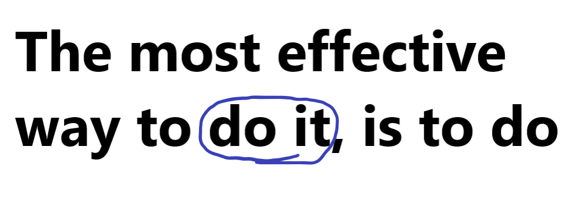
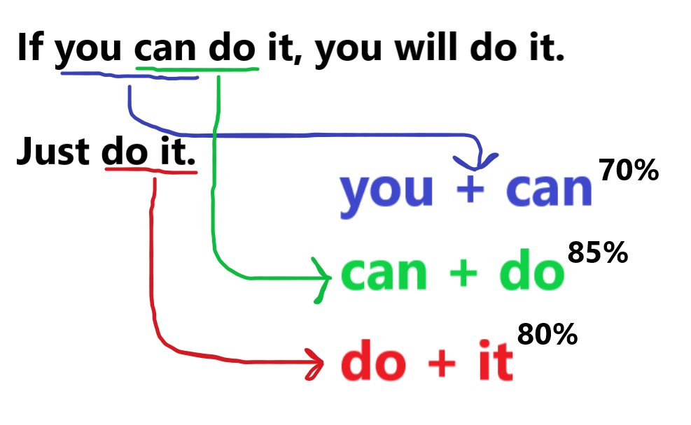
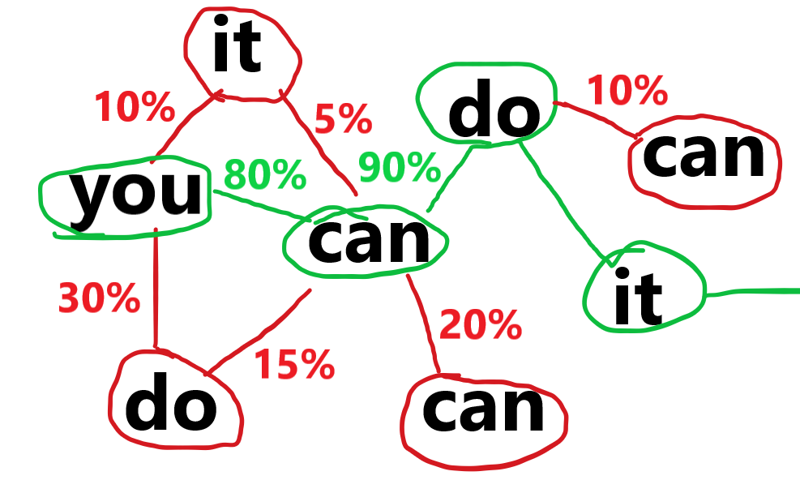
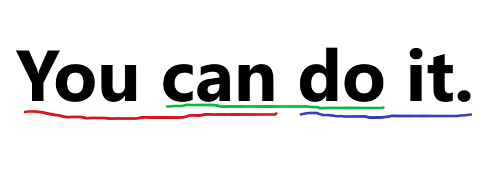

How it works
Step 1: The sentences from your training data group together and get a score on how related they are.

Step 2: The algorithm does that for all of the sentences in the training data.

Step 3: A word is randomly selected based on the scores of the words. For example, "can" has an 80% chance of being the 2nd word because it's relation to "you" is 80%. This system is called a Markov Chain.

Step 4: A phrase gets generated.
